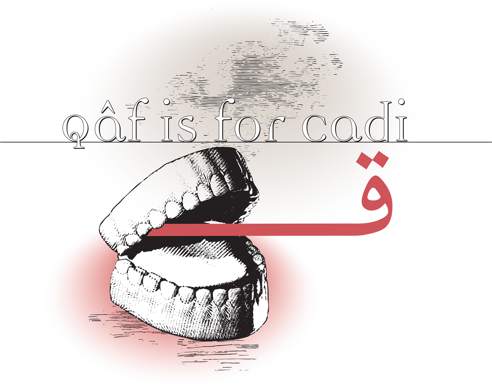
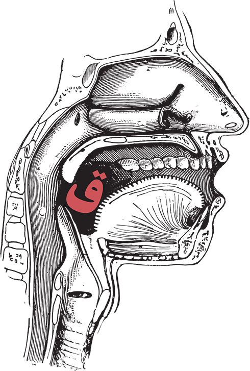
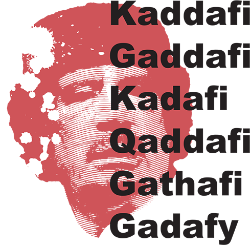
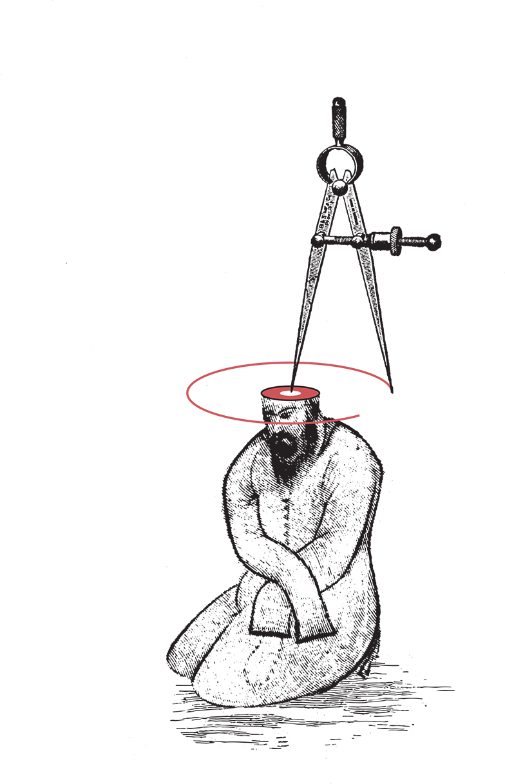
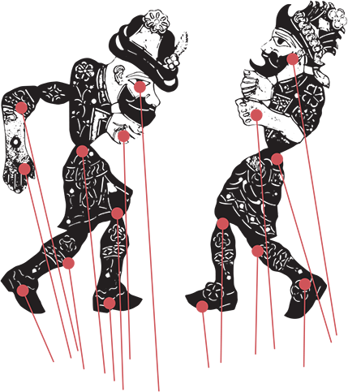

The Arabic Alphabet: A Guided Tour
by Michael Beard
illustrated by Houman Mortazavi

Qâf is for Cadi
It comes from the back of the throat, like Ghayn or ‘Ayn, more or less the same place our K or G come from, but centering on the uvula. Knowing this will not help anyone pronounce it who didn’t grow up with it.

There are alternative pronunciations, very likely more than I am aware of. In Upper (southern) Egypt the Qaf turns into a hard G sound, the G familiar to us. Egyptian dialect in the north turns Qâf into a glottal stop, or to some ears it just becomes inaudible. Qawî, “strong,” “intense,” “powerful,” becomes ’awî, pronounced more or less “owie” and used as a general intensifier, “very.” (It’s not as if speakers of Egyptian dialect didn’t know the canonic Qaf sound. They can pronounce it just fine. You will always hear a proper Qaf, pronounced in proper style, as in standard Arabic, in the word Qur’ân or in the name of the city, al-Qâhera, “the victorious one,” i.e. Cairo.)
Q
It looks simple enough: in its initial and medial positions it is just Fâ with two dots instead of one. (There is an alternate form with a single dot, but underneath.) At the end of a word it is easy to distinguish the two by shape. Terminal Qâf, as the pen goes leftward, dips further below the line than ف, deeper but not as deep as س, Sînو or ص , S͎âd. Fâ drifts on horizontally to the left. In Nabataean,â and Qâf were pretty much identical, a shape something a little like a Greek Omega (Ω). No relation between the two sounds. Go far enough back into the pre-history of ق and you find Qâf’s Phoenician ancestor, Qōp, (φ), also thought to be a uvular stop.
KW
The search for letters to represent Qâf in the Roman alphabet can look a little desperate. I’ve always heard it as a variant of G, but one specialist after another has heard it as something more like a K sound. An early choice was C. (Our spelling of Cairo attests to it.) The word for a judge, qâd͎î, قاضی, Persian “qâẓi” (from the Arabic verb قضی, qaḍâ, to complete, settle, conclude ) occurs frequently in European stories set in Persian or Arabic settings, and for some reason the tradition is not to translate it. (Q qâd͎î , rather than being translated, gets transliterated instead – one way or another). You can find cazi, cadi, kadi, or kazi. (Both consonants, ض and ق, D͎âl and Qâf, are ambiguous,) William Jones in his 1809 grammar of Persian uses K for ق and C for the sound we know as K. The item on the word قاضی in Henry Yule’s Hobson Jobson adds “Cazee, Kajee, &c.” His list of examples goes back to 1461, where François Villon (in his “Testament”) has a pirate condemned to death saying “Si fut mys devant le cadès,/pour estre jugé à mourir” (“he was brought before the qâd͎î and condemned to death”).
Yule includes, among the options for ق , a K with a dot underneath, the same option Lane’s lexicon used. Lane’s description of the sound (“its pace of utterance is between the root of the tongue and the uvula”), adds “it is of the strongest letters, and of the most certain of them in sound.” “Strong” and “certain.” Evidently he liked it.
The Cyrillic alphabet seems to take Qâf to be a variant of K: in Tajik transcription it’s қ (Қ), a K with a little extra mark, taking a little step forward.
In at least one case Qâf gets an X: Luxor in Upper Egypt is a Qâf name, Al-quṣûr. (Quṣûr is the plural of Qaṣr, castle or fortress, said to come from Latin castrum.) Alcázar, “the palace,” another place name tourists in Spain learn, is another cognate of qaṣr.
The use of Q to represent ق began among specialists, as early as the 17th century. Edward Pococke (1604-91) Bibliotèque orientale, the monumental dictionary by Bartholémy d’Herbelot (1625-95) both used Q regularly.
Q ventured outside the world of specialists gradually, but by now it’s easy to find on our maps: we transcribe قطر , Qatar, with a Q, and that city in Iran called قُم , Qom. Spelling it Qum, logical enough for a specialist, raises the dilemma of English qu- which we know as the KW sound. It looks as if Qum should be pronounced Kwm without a vowel (instead of what it is, a Qâf followed by an O sound and a Mim). The Q in Quetta, in Pakistan, is deceptive for the opposite reason, because it actually is, in fact, our KW sound, not a Qaf. It’s our transliteration of Kweta, کوټه. (The ټ with a dot, incidentally, is from the Pashto alphabet, a retroflex T like the one represented by ٹ in the Urdu alphabet.)
We use the Q regularly in Al-Quds, “the holy one,” the Arabic term for Jerusalem. It might have raised the same problem as Qum, but for some reason no one seems to mind it. We use the Q in عراق, Iraq. (In European languages you are likely to see both Iraq and Irak. In Portugese, I am told, it’s Iraque.)
There is a deceptively powerful poem by Sharon Olds, published in the The New Yorker (10 & 17th 2009) when the disastrous U.S. occupation of Iraq was going strong. The title of the poem, “Q,” is straightforward. It seems at first to be a comic poem, the kind which just lists innocent little details and fun facts – its uses in initials, its relation to K, its shape, you know the genre. (“No one was/quite sure where it had come from, but it had/travelled with the K”). It ends in a different key, with a scene where one passes a folded newspaper with a Q in the headline. She’s talking about the Q in Iraq. You can hear the word with the Q talking to you.
... you can hear from within it
a keening, from all the Q’s who are being
set in type, warboarded,
made to tell and tell of the quick and the
Iraq dead.
Birds

The late ruler of Libya (d. 2011) قذّافیی was a problematic figure for many reasons (a tyrant at home, philanthropist in West Africa,). One is his name, a dilemma for which in fact there is no right answer. We used to see it frequently in our newspapers -- most often spelled “Kaddafi,” but you’d also see Gaddafi, Kadafi, Qaddafi, Gathafi, Gadafy. In Arabic script that opening letter is a Qâf; then comes Dhâl (either DH or Z). Unhappily for the Roman alphabet, the Dhâl, already transliterated as two letters, is doubled. That makes four challenges. An article by Eoin O’Carroll in The Christian Science Monitor (22 Feb, 2011) takes on the journalist’s dilemma:
For those few brave editors who press on, the result is a multiplicity of spellings. The Associated Press, CNN, and MSNBC spell it "Moammar Gadhafi." The New York Times spells it "Muammar el-Qaddafi." At the Los Angeles Times, it's "Moammar Kadafi." Reuters, the Guardian, and the BBC go with "Muammar Gaddafi." The Irish Times goes with "Muammar Gadafy." ABC News – which spells it "Moammar Gaddafi" – has posted a list of 112 variations on the English spelling of the Libyan strongman's name.)
Strictly speaking, the spelling would be Qadhdhâfî, an impractical option for non-specialists.
The stem of that name, Q-Dh-F (Hans Wehr: to throw, cast, discard, push, shove, kick, evict, oust, to bomb), suggests strength. Qadhf is defamation, abusive language, slander. A qadhîfa is a projectile, missile or bomb. To launch a bomb is qadhafa-hu bi’l-qanâbil, to qadhaf someone with qanâbil.
Q word Qanâbil is the plural of qunbula (قُنبُلة) or qunbura (قُنبُرة), a bomb shell, grenade. At least one source says qunbura, or perhaps both, is a loan word tracing back to Greek βόμβος, bómbos, “any deep, hollow sound.” (Homer uses a verbal form of the same word to describe the roaring of the river Scamander in a battle scene in Iliad 21.) English “bomb.” The Persian word for a mortar shell, a khampareh, is said to be related.
The word qunbur, قُنبُر, a lark, looks as if it ought be related to qunbula (or qunbura), but qunbur is a proper Arabic word, with a proper Semitic stem (4-consonants: Q-N-B-R). Sometimes you might think that a Qâf was designed specifically for birds. The word for bird in OttomanTurkish is Qâf word قوش , kuš. In Arabic a qarqâvul, قرقاول, is a pheasant. A قطاً , qaṭan (or قطاة , qaṭâ’a) is a sand grouse. Persian Qâf word qu, قو, a swan, is another of those challenges to the Roman alphabet, perhaps a bigger challenge than the city of Qum. There’s a more practical transcription, Ghoo. It’s easier in Turkish -- kuğu, which is its source. قو is not an obscure word: it’s famous for Motel Ghoo, a resort on the Caspian (now named Salman Shahr).
A قمری , kumru, qumrî, in Turkish, is a turtle dove. Lane’s lexicon aims at precision: “a species of collared turtle-dove, of a dull white colour marked with a black collar: such I have seen in Egypt, caged; but they are rare there; and, I believe, are brought from Arabia.” Lane also lists qorqor, قرقر, which he defines, if you can call it a definition, as “name of a little bird.”
One dictionary (Ifsâḥ fî fiqh al-lugha) adds that it tuqarqir, تُقَرقِر, “it coos and laughs like a human.”
The verb قَرقَرَ, qarqara, represents multiple sounds (cooing, gurgling, clucking, laughing), most of which seem bird related. Qâf also seems partial to bird sounds. Steingass lists qarq, قرق, “any sound uttered by a fowl,” qarqâr, قرقار, with a long Alif, “the cooing of a dove,” and qarqareh, قرقه, the same. Some birds even speak in Qâf words: the sound of a rooster in Persian is قوقولی قو, Ququli-qu. (Probably no relation to French cocorico or our cockadoodledoo – which suggests they’re all onomatopoetic, though I don’t hear it.) Qâf verb Qâqa is to cackle or cluck. It is said to be the source of the word قاق, qâq, “cormorant.”
Qâf birds in Persian include the قُقنوس, qoqnus, the phoenix.) I like the etymology that traces qoqnus to Greek κύκνος, kuknos, a swan, Cygnus, though I’m told it’s been contested. Sounds good to me.)
Survival
In The Conference of the Birds (Manṭaq aṭ-ṭayr ), where the birds go on their mission searching the Simorgh, the qoqnus isn’t one of the seekers, but it appears in a dialogue as an example. A bird (unnamed) confesses to their leader, the hoopoe (hodhod), that it is afraid of death. The hoopoe replies first with the homiletic observation that everyone dies, we’re born for death, we’re just drops of water (qaṭreh-ye âbi) waiting to be absorbed in the ground. A parable follows, the story of the qognus (one edition of the poem vowels it qaqnos, no idea why).
If it’s the phoenix’s big bonfire we’re waiting to see, the big funeral pyre which ends the story, Shaykh ‘Aṭṭâr gives the story some suspense. We learn first that the qoqnus lives in Hindustan, and it has exceptional skills. To prove it, the hoopoe zeroes right in on the beak. It’s no ordinary beak. It has about a hundred holes in it (qorb-e ṣad surâkh, Qâf word qorb meaning in this context “approximately”). The holes have a function. They make music (like a recorder?). Thus music is so artful that once a human specialist of some kind (a filsuf), came to study music with him. There may have been a distinguished visitor, but, visiting philosopher aside, there is some emphasis on the qoqnus’s solitude and the melancholy of the music.
Qerâr (from Arabic qarra, to settle down, dwell) means solidity, firmness, stability. To be bi qarâr is to be unsettled, troubled, disturbed, and this is the effect of the qoqnus’s music on nearby birds and even fish. (Morgh-o mâhi gardad az vey bi-qarâr.) A long segment of the story describes that music and its effect on the listener. After qorb-e hezâr, about a thousand years, it’s time to die. Finally we get to the funeral pyre, starting with the collection of wood and the first spark. The qoqnus plays sad music and the other animals gather around. When the new phoenix arrives, a single new phoenix, all there is of the next phoenix generation, it is evidently a matter-of-fact development:
آتش آن هیزم چو خاکستر کند
از میان ققنوس بچه سر بر کندÂtesh-e ân hizom chu khâkestar konad –
Az miyân-e qoqnus bacheh sar bar konad.The pyre’s consumed—and from the ashy bed
a little phoenix pushes up its head. Trans. Dick Davis
Shayk ‘Aṭṭâr may not give the rebirth much emphasis, but the point of the story is surprising. We are used to hearing of the phoenix as an emblem of immortality, assuming the newborn phoenix is an extension of the old one, the same bird rejuvenated, but the hoopoe concludes that, despite that thousand year life span, the qoqnus still dies, like all of us. It’s just another memento mori. What we remember is the sad music.
The other memorable phoenix in Persian appears in a modernist manifesto by Nima Yushij (1895-1960). In his “Qoqnus” (1941) the bird sings beautifully, sitting on a branch of bamboo (such as one might find in Hindustan? In Mazanderan?). The other birds admire the song, as you might admire a master poet with a new style.
If the phoenix is a poet with a new vision, you want more than one offspring to spread the word, keep the tradition alive, and leave us with a happy ending. You want to emphasize the successors as a triumph.
باد شدید می دمد و سوخته ست مرغ،
خاکستار تنش را، اندخته ست مرغو
پس جوجه هاش از دل خاکسترش به درBâd-e shadid mi damad-o sukhteh-st morgh,
Khâkestar-e tanesh râ, andukhteh-st morgh,
Pas jujeh-hâsh az del-e khâkestar-esh beh dar.A fierce wind consumes the bird,/ but her ashes survive,/and from those ashes her chicks’ heads will protrude.—Trans. Robin Magowan (A Rose Garden of Persian Poetry from the 10th century to the present, 199)
Shaykh ‘Aṭṭâr’s qoqnus lives in Hindustan, a way to see it’s nowhere near us. The Simorgh lives further away still, the mountains at the end of the earth:
هست مرا پادشاهی بیخلاف
در پس کوهی که هست آن کوه قافHast mârâ pâdeshâhî bikhalâf // dar pas-e kuhî ke hast ân Kuh-e Qâf. (p. 45)
We have a king; beyond Kaf’s mountain peak
The Simorgh lives, the sovereign whom you seek (Davis, 33)
Robert FitzGerald, whom we know for other translations, translated part of it, rendering a lot of the story into a free narrative, not immune to some embroidery:
Up to the mighty mountain Káf, whereon
Hinges the World, and round about whose Knees
Into one Ocean mingle the Sev’n Seas;
(FitzGerald, 260)
Yes, Qâf, the name of the mountain at the end of the world, is the same as the letter. Kaf has become a standard way to write it. The Caucasus (Qafqâz, Turkish Kafkasya) has been called Kuh-e Qâf, the mountain of Qâf, not the edge of the world but a logical (and contested) boundary for nations. The town of Vladikavkaz, just south of Georgia in the Caucasian foothills, means “ruler of the Caucasus” (the vladi- part from Russian владеть, vladyet’, “to rule,” on the same pattern as Vladivostok, “ruler of the East”).
It isn’t always mountains that surround the known world. Sometimes it’s water. There’s the ocean called Ôkeanós, ωκεανός, for example, which comes into Arabic early on as قاموس , qâmûs, where it is just the sea, usually a term for stormy waters. It developed a secondary meaning, also universalizing, an ocean of words, in the good sense, i.e. a dictionary, a meaning which came to overshadow the original one. Qâmûs, which became in both Arabic, Persian and Ottoman Turkish the standard term for a dictionary. (In contemporary Turkish the commoner word is the more indigenous sözlük, from Turkish söz, “word, something like Persian vâzheh-nâmeh.”)
Navigation
It is easy enough to see the link between ocean and dictionary. They share inclusivity. Both are big categories. If you’re in the right frame of mind, you can get lost in either one.
Navigation on an ocean begins with the ability to find the pole. It’s easy to find if you know the two constellations which are so easy to spot, the Dubb al-akbar and the Dubb al-asghar, the big bear and the little one -- where you find the pole star.

Qâf word quṭb, from a stem meaning to gather or concentrate at one point, is a pivot or axle, pole (as in North Pole or South Pole). Finding it is useful for navigators. The word can be useful for sycophants too: an epithet of a tyrant in Persian can be قُطبِ عالم , Quṭb-e ‘âlem, pivot of the universe. It is said that among the Sufi orders, there is a kind of hierarchy whereby there is at any one time a single spiritual leader whose piety surpasses the others, that there is only one in the world at any one time, called The Quṭb. I am fond of the idea you find in the 11th-century treatise Al-Hujwiri’s Kashf al-Maḥjûb, that the quṭb is not necessarily aware of being the quṭb.
The star at the tip of the bear’s tail in Ursa Major is Alkaid, -kaid being a transcription of qâ‘id, the one who remains unmoving or unmoved (a term you would expect to be reserved for the Pole Star), here meaning something like “eader.” The constellation in Arabic is the Daughters of the coffin,the na‘sh. The na‘sh is the rectangle of stars and the three daughters (banât, plural of bint) are a procession evidently pulling it. This would make Alkaid their leader. (There was an archaic word in English, “caid,” with the same meaning. Spanish alcaide, a prison warden, is a cognate. At one time it meant a military governor of a warden of a fortress.)
A variant of qâ‘id, al-qâ‘ida, is a word for base or foundation, from the same stem. “Alqaida,” now familiar in English, belongs in the list of words in which we take the Q for granted (rather than a K or C). There is an odd theory that Osama bin Laden was as a teenager fond of Isaac Asimov’s Foundation trilogy, that the Arabic translation of “foundation” was al-qâ‘ida, and that he identified with the character Hari Seldon. (See Giles Foden, “What is the Origin of the Name al-Qaida” in The Guardian 23 August 2001)
It’s a tempting theory, but there is a complication. The translation of the word “foundation” in the Arabic translation isn’t Al-qâ‘ida, but المؤسسة, Al-mu’assasa (an establishment, a firm, an institution), though al-qâ‘ida would certainly have been logical enough.
Al-qâ‘ida is one of those loan words for which English speakers know only the sinister meaning. There are a lot of others. Down deep it means “fundamentals.” It can mean a maxim. In its plural form, quwâ‘id, قواعد,we have quwâ‘id al-manṭaq, the rules of logic; quwâ‘id al-dîn are the fundamentals of religion. Quwâ‘id al-lugha are the rules of grammar. The month of the lunar calendar in which warfare is forbidden, is ذُو القَعْدَة, Dhu’l-qa‘ada (the month of sitting in place, roughly “the month of peace”).
Still, like the skewed way the word “jihad” is interpreted in English, it would surprise me very much if the neutral meaning of qâ‘ida were ever restored to us. We’re just not getting it back. The meanings of words are too vulnerable to our emotions.
Qalb,قُلب (plural qulûb), means “heart,” with all the significance that “heart” has for us in English: the organ, the seat of feelings, and the center of things (as we might say “heart of the matter” or “heart of darkness”). Qalbî in Arabic, “my heart,” is a term of affection. Qalb al-‘Aqrab is another name for Antares in Scorpio, Qalb al-Asad , the star also called Regulus in Leo: Allen’s Star Names lists 13 qulûb up there. More celestial body parts.
The stem is the verb qalaba, قَلَبَ, to turn over, turn inside out, reverse. (Feelings can turn a heart upside down.) The form انقلاب, inqilab, is in celestial terms the winter or summer solstice, but also a coup d’état, upheaval, revolution, i.e. a political revolt. By now the initials IRGC are familiar on the news: Islamic Revolutionary Guard Corps. سپاه پاسداران انقلاب اسلامی, Sepâh-e pâsdârân-e enqelâb-e eslâmi, in which enqelâb suggests the establishment of a new order. The equivalent in Turkish, inkılap, means roughly the same thing (Redhouse dictionary: “radical change, revolution, evolution, renovation. . . changing, inversion”). It was at one time the term for Ataturk’s revolution, including the cultural changes, though as the taste for indigenous Turkish terms increased, devrim (from the verb devirmek, to overthrow, overturn) came to replace it. Qaddafi (sic) sometimes referred to his Green Revolution in Libya as an inqilâb, though as time went be he came to prefer the word thawra (from a stem meaning to stir, to rouse, to unleash or break out)-- a more totalizing term, implying a popular revolt, a spontaneous uprising. In Arabic the two options of thawra and inqilâb, if I understand it correctly, makes inqilâb the less fundamental concept, more likely a simple change of governments than a revolution, the concept you get in English when you point out the re- prefix in “revolution”—which is the noun for “revolve” as well as “revolt.”
Hemispheres
The verb qabila, قَبِلَ, to accept, receive, agree, permit, is one of the most prolific stems we have. Maqbûl means acceptable. It has a temporal aspect. Qablan means “previously.” Istiqbâl means reception, and for some reason a full moon, also the future. A qabâla, قَبَالَة , is a “responsibility,” “liability,” “a contract.” Hebrew “Kabbala” is probably a cognate. Qibla means the center, a cynosure (in the old sense), also the niche in a mosque which indicates the direction towards which one bows down.
Qâf is for قبّه, qubba, a dome, one of those shapes which, along with minarets, turbans and camels, are signs of the Middle East in popular imagination.
It is a standard observation that the dome represents the heavens. It seems reasonable enough. We expect religious iconography to reside in a place of worship, but there is also a more recent tradition that the dome, both shape and decoration, has no particular meaning – just a shape designed to distribute weight on the building below. Shapes with or without meaning: it’s hardly worth deciding. If a dome does signify “sky,” does the architect have to have known it? Was the meaning known early on and then ignored? Was it known and forgotten? Is the connection so obvious it doesn’t matter? At what point historically would we judge that it did or didn’t “have” the meaning? I’d argue that the equation of dome and sky is a hard comparison not to see.
Domes may include a bit less of the sphere, like the Hagia Sophia in Istanbul, or more of it, narrowing a few degrees below where the equator would be, like the dome on the Taj Mahal or the slightly cinched hemisphere of the 17th-century Shah Mosque in Esfahan. The base may narrow drastically into an onion shape, the shape we also see in Russian Orthodox churches. They may be slightly pointed.
Among the first onion-shaped domes on Orthodox churches are the memorable cluster you see (for some reason painted, whimsically) on top of St Basel’s Cathedral on Red Square in Moscow. There is a tradition, which I’m told is mistaken, that St Basel’s was modeled after the central mosque in Qaf city Kazan, قازان , destroyed by Ivan the Terrible (Ivan the Qâf word قورقونچ or korkunç) in 1552. There was a new mosque built in its place, recently, the mosque of (Qâf name) Qulsharif, the name of a scholar killed during Ivan’s siege). It doesn’t look much like St. Basel’s.
Muqarnaṣ, that honeycomb structure formed by clusters of miniature niches, sometimes filling the space between the right-angled part of the structure and the dome – transition (as you sometimes hear) from cube to sphere (René Guénon’s term). I’m not sure I understand what the art historian Titus Burckhardt means when he speaks of it in spiritual terms (“the honeycomb . . . linking the cupola to its quadrangular base is . . . an echo of the motion of heaven in the terrestrial order” -- Art of Islam, 1976, p. 73), but I certainly understand that there is something noumenous in the sensory overload produced by that flock of miniature domes. Muqarnas may be a Qâf word from a stem Q-R-N-Ṣ, a four-consonant specialized term from falconry, a verb describing molting. The logic, one is told, is that a muqarnaṣ resembles the overlapping of feathers on a hawk’s wings. Or it could trace back to the Greek word Korōnís, κορωνίς, “curved,” “crooked,” source of the English word “cornice.” If the muqarnaṣ is in a niche, and we use the word “alcove” to describe it, the description takes on a fractal quality, since “alcove” comes to English, through Spanish alcoba, from al-qubba.
If in fact the dome represents the heavens (again, why not?), it seems particularly moving to see the outside decorated as well as the inside. It is one thing to represent the sky as we see it from underneath, the way we in fact see the sky; it is another to imagine the decorations on the backside of the heavens. (There is something like it in Plato’s Phaedrus, where he imagines the chariots of the gods in a procession at the back of the sky.) At the Alhambra (Alhamra), there is an inscription ascribed to the Andalusian poet Ibn Zamrak, at the 14th-century Sala de los Abencerrajes, Hall of the Two Sisters (cited by Jonathan Bloom in an essay on the iconography of height in early mosques): “a cupola which by its height becomes lost from sight” (138).
قُبَّةٌ يَضِلُّ الطَّرْفُ عَنْ عُلُوِّهَا
كَأَنَّهَا فَوْقَ نُجُومِ السَّمَاءِQubbatu yaḍillu aṭ-ṭarfu ‘an ‘ulûwihâ
Ka’annahâ fawqa nujûmi-ssamâ’i.The eye loses its way in those heights
as if it were lost in the starry heavens.
There are countless elements of a mosque which can be dazzling to the uninitiated observer. Let me put a word in for the very peak of the dome, whether rounded or pointed, where there is often a finial, a metal spike pointing upward. Often the spike ends with a hand, called a khamsa in Arabic since khamsa means “five.” (In Islamic context, the five fingers are said to represent the five pillars of Islam. They may seem to be reaching upward.) Sometimes you find a stylized crescent moon (qamar). Sometimes what you see are three small globes, one atop the other. (There is a tradition which I have heard but never read that the balls represent a series of upper heavens.) That spike is unnecessary to the design, an extension which is additional to the complete structure, something like the numeral “one” in 1001.
There is an odd image in Sanâ’î’s H͎adîqat al- H͎aqîqat in which the dome is an image of elevated knowledge. Early in his rambling presentation he explains, with an elegant mismatch of scale, that his topic is impossible to describe. The world of senses is not sufficient to know the divine; it requires karam (“grace” in the sense of unearned generosity) to enlarge our perception. Without it, nothing.
بدلیلی حواس کی شاید
جوز بر پشت قبه کی پایدBe-dalili h͎awâs ki shâyad
juz bar posht-e qobbeh ki pâyad?How is it possible by the guidance of the senses?
How can a nut rest firmly on the summit of a dome?
-- H͎adîqat al- H͎aqîqat 3.8 (trans Stephenson, 1910, p.4]
The senses are something round, compressed, hard and tiny. So much for everything we experience on earth. It is a bit different from the nutshell image in Hamlet (“I could be bounded in a nutshell and count myself king of infinite space”—ii.2) because for Sanâ’î the nutshell feels smaller and more opaque. The dome, that reality beyond the senses, is also round but massive and too smooth to grasp. Epic, sublime architecture.
The tip of a dome with elaborate decorations, right up to the base of the metal spike, is not visible to the spectator below. The muezzin’s view from the minaret is an exception, or used to be, since today the call to prayer is more frequently just a voice from a speaker, often recorded. (The old tradition that a muezzin should be blind has to do with rooftop life, which is private.) From the ground we see the style of the decorations and extrapolate what the rest must look like. An aerial view of the dome, such as we see from neighboring high rises, in art books or National Geographic style photos, may seem transgressive, something we weren’t designed to see.
Qara
When Turkish educators opted out of the Arabic alphabet and took on ours, the sound of Qâf was no longer an issue. Qâf came to be transcribed as K; so was Kâf (our K). This wasn’t carelessness: K and Q were related sounds (Q with a back vowel, K with a front one).
The word for “black,” qara in an older Turkish, قره, becomes kara in contemporary spelling. The absorption of Turkish words into Russian is testimony to the cultural power of Ottoman culture. The Kara- of Brothers Karamazov is qara. (The -mazov is Russian verb mazat', мазать, to smear, to stain, or to oil.) So is the Kara of Platon Karataev, the positive character, spiritual peasant in War and Peace, also, more recently, the name of a Hungarian folk-band.)
Qaragoz
The word قوقلة, now kukla, means “puppet” in Turkish (Russian кукла). It is said to trace back to C word, Latin cucullus, “a hood,” such as worn by a monk. This would suggest a hand puppet, but the most famous kukla is a shadow puppet.

Qaragöz in Turkish is “the one with black eyes,” the hero of a puppet play, something like a Punch and Judy show in England, but in two dimensions. It is a shadow play – flat figures cut from animal skins or whatever is at hand, pressed against a back-lit screen, illuminated by a qandîl. (Qandîl stems from another Latin C word, candela, a lamp. And yes, candela is also the source of our word “candle.”)
Qaragöz and his straight man Hacivat (pronounced Hajivat) have adventures and debates. A characteristic opening has Hacivat singing an elaborate prayer or invocation. Qaragöz arrives and misinterprets the song, and after the comic dialogue the scene opens up to the world outside and they interact with the community. There are Karagoz traditions in Greece and in Egypt. (Ahmad Amin says that in Egypt there is a variant which tells lives of the saints. Almost certainly without the characters of Hacivat and Karagöz.) The comparable figures might be Bugs Bunny and Elmer Fudd, if Elmer Fudd were a bit more intellectual. Abbot and Costello might be a bit closer, though Karagöz plays are more anarchic. There is social commentary, satire, and perhaps more variety than I know about.
Byron’s traveling companion John C. Hobhouse (1786-1869), described a performance he saw in Greece in 1809 or 1810 (A Journey Through Albania and Other Provinces of Turkey . . ., 1817). He is primarily interested in the detail that the performers were Jewish, but he notices other things as well. He recognized the similarity between the figure of Punch in British puppet plays, and the artistry of the cut-outs:
The hero of the play was a kind of Punch called Cara-Keus and the next in dignity was a droll called Codja-Haivat. The Jewish performer used cardboard puppets and the Cara-Keus figure had a movable phallus manipulated by a string around the puppet’s neck” (cited in an essay by Ilhan Başgöz in Turkish Folklore and Oral Literature, p. 296).
If it’s like a cartoon, perhaps it’s South Park.
Pépé le Pew, the romantic skunk in the Warner Brothers cartoons, had a French accent, but I didn’t learn until recently that he was based on a character named Pépé le Moko, played by Charles Boyer in the 1938 movie Algiers, notorious jewel thief, hiding out in the traditional neighborhood, the original city, “the Arab Quarter” of occupied Algiers. This in turn was a remake of a French film, where the character was played by Jean Gabin (1937), itself based on a novel by Henri La Barthe (Pépé le Moko, 1931).
The first cartoon with Pépé le Pew is in fact set in the Casbah. (You pass through a lane where there is a fleeting glimpse of a door in the background with the name Pépé le Moko on the nameplate.) It is Pépé le Pew, not Charles Boyer or Jean Gabin, who originated the invitation which became for some reason a famous phrase, “Come with me to the Casbah.”
In English (if not in French) the word “casbah” is characteristically used to suggest mystery, something sinister or threatening. In the Clash’s “Rock the Casbah” (1982), the threat is pretty specific: the casbah is like the high school in Footloose, or contemporary Afghanistan, where they don’t approve of dancing. If we’ve seen the video, we know that music solves the problem and succeeds in bringing people together, background or ethnicity notwithstanding. If only.
In the word “casbah,” the C represents a ق. The meanings of قصبة, qaṣaba, include a reed, a pipe, a pen, the trachea, the shin bone (I’m quoting a few words from Hans Wehr’s list), and his final item is the capital of a district (a county seat), and a fortified area and citadel area, i.e. the protected area, of a city. (Wehr specifies “of a North African city.”)
As a verb, qas͎aba means to cut up or carve. A قصاب, qas͎s͎âb is a butcher. The Greek dance referred to as the Butcher’s Dance is called Khassapiko ( χασáπικο ). The B has become a P (Arabic qas͎s͎âb becomes Turkish kasap). The Qâf has become a KH.
Taqsim
One of the most beautiful genres of Greek traditional music the ταξίμι, taksimi, where the “ks” is the letter ξ – pronounced KS, like English X. A ταξίμι is a solo improvised performance, without a fixed rhythm, in which the internal resources of the musician are tested. There isn’t have much to fall back on. It stems from the, also improvised, classical Persian, Arabic and Turkish تقسیم (taqsîm). An improvisation may be the form where you hear most clearly the traditional Greek scales and pick out the quarter tones. You can hear this on the bouzouki in recordings of the great Greek rembetika musician Vassilis Tsitsanis.
Taqsîm is crucial to Arabic, Persian & Turkish music. Books of musical instruction may include tips for improvisation. You learn the scale (the mode, or maqâm (from the prolific verb qama, to stand up, rise) and then there are little phrases (gousheh, “corners”) which the musician can weave into the tune as it evolves.
Abu Al-gasim
There is an anonymous story, narrative interspersed with verse, written in French in the 12th or 13th century and preserved in a single manuscript, entitled Aucassin and Nicolette. It is one of those medieval romances, recognizably the inheritors of the late classical tradition (like Longus’s Daphnis and Chloe or the Metamorphoses of Apuleius). It is told partly in prose, partly in verse. (You see it referred to as the chantefable form, though I’ve never seen references to any others.) Walter Pater observed that it resembled the 1001 Nights. Aucassin is sort of an oaf (the usual king’s son); the object of his love, Nicolette, is a “Saracen” servant in his household. The love story ensues,with the mandatory separation of the pair. (If we want a similar story from the 1001 Nights, with a woman who takes charge, there is the Princess Budûr in the story of Qâf name Qamar al-Zamân.) There are travels, comic dialogues, incarcerations and conflicts with authority, and a country called Torelore where wars are fought with rotten apples, eggs and fresh cheese and the king is planning to give birth while the queen is out in battle.
The ending is particularly cunning.Nicolette discovers that the king of Carthage is her father, which we kind of expected. Finally she disguises herself as a traveling minstrel and ends up singing the plot of her own story for Aucassin. It takes him a while to recognize her, but it leads to the inevitable marriage. The settings are presumably North African. It isn’t much like a Karagöz performance, but it has been produced as a shadow play – in a film by Lotte Reiniger (National Film Board of Canada, 1975).
A friend assures me that, although Nicolette is the “Saracen” of the story (Saisne in the ms, French Sarrasin, from Arabic شرقیین ). and Aucassin is the Christian prince, Nicolette is the one with the European name. Aucassin’s name has no European etymology and is probably a variant of Abu al-Qâsim.
Q-S-M, the stem of Qâsim and taqsîm, means “to divide,” “part,” “distribute.” Inqisâm is a schism, disruption, breakup. The maqsûm in mathematics is the dividend. Qisma is the process of mathematical division. By a logical chain of meanings qisma also means one’s share, one’s portion, one’s lot, fate, English “kismet.” The introduction to Sa‘di’s Bustân (not the Golestân, but a long poem in couplets) opens with the theme of divine guidance. Everyone has their allotted fate:
چنان پهن خان کرم گسترد
که سیمرغ در قاف قسمت خرد.Chunân pahn-khân-e karam gostard
Keh Simorgh dar Qâf qesmat khord.He spreads out his bounty (his karam) so widely that
even the Simorgh in Qâf has his qesmat laid out for him.
A qâfila is a caravan, one of those images we associate with the Middle East even if we don’t know much else. The stem, Q-F-L, includes a mix of meanings which gets a person thinking. The first meaning is to return home. (Not the itinerary we usually ascribe to a qâfila.) A qâfil (same word without the suffix) is the noun for returning, going home. Whether or not Sa‘di’s reference has the Simorgh of Manṭaq aṭ-ṭayr in mind, it would make sense, since that Simorgh has as much authority as you can have. When Shaykh ‘Aṭṭâr’s birds set out to see the Simorgh it would be hard to say whether it is a distant journey or a homecoming.
Another major meaning of Q-F-L is to lock something up. The noun قفل , qufl is a lock. A قففال , quffâl, is a locksmith. There is no particular reason to link up the possible meanings, but homecoming and a lock are not unrelated ideas. Waqafa, وقف, means “to stop.” It includes forms without the W (و), which might as well be Qâf words. One is qifâ, قفا , the dual form of the imperative, which opens with one of the most frequently quoted works in Arabic poetry, Imru’ al-Qays’s “قفا نبکی ”: Qifâ nabki, “Stop here, you two, and let’s cry . . .” It’s the opening phrase in the opening poem of more than one anthology, thus initiating a poetic tradition, appropriately, begins with a word which suggests “stop here.”
The imperative you are more likely to see is simply qif, قف , two similarly shaped letters, Qâf and Fâ, ending with that distinctive, relatively flat, leftward swoop..
There is a story about a study trip of American geology students in Morocco. On country roads they would run into stop signs: the standard octagonal shape with the word “stop,” qif ( قف ) on it. The standard response became “Look, another canoe crossing.”